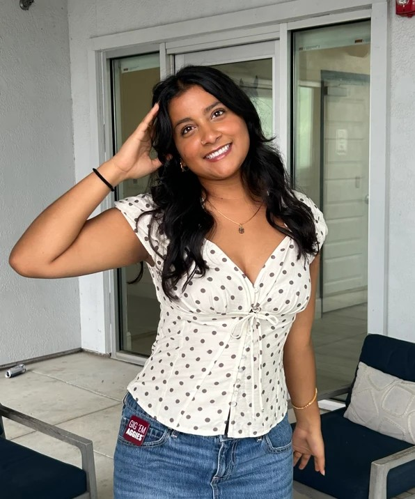

MIS & AI EthicsWebsite OverviewYasmin, Bethani, Logan, Alison, and KhushalOctober 29, 2026Yasmin From this assignment I have learned how Management information systems help people organize information to make their work more efficient and less complex. Working on all of the code, it has taught me that coding is very powerful and can take you long ways. Building the website has really taught me how much coding can do. One of my biggest takeaways is how accurate everything needs to be. One simple line switch or forgetting the tags can give many errors so you have to be precise. This assignment has helped me understand a whole different side of MIS and the ethics of AI. Overall technology is very powerful and with just a couple lines of code you can die anything Contact: yasmin.misai@example.com Bethani MagbyWorking on this project helped me develop a better understanding of how Management Information Systems organize information and how Artificial Intelligence can be used in everyday businesses. Creating a webpage gave me hands-on experience with HTML and showed me how the different elements all work together. Learning about Artificial Intelligence also helped me understand why it is important to use these resources responsibly and verify the information it provides. My section of the project focused on incorrect AI usage, including plagiarism, misinformation, and bias. Working through my section showed me the importance of following instructors' policies and giving proper credit when using AI-generated content. Overall, this project showed me that technology such as AI, is the most helpful when it is used responsibly and ethically. I also feel that this project helped me develop great skills in working as a team and communicating with group members. In conclusion a very informative and eduational project over many different aspects. Contact: bethani.magby@example.com Logan PhamI got hands-on practice with how Management Information Systems organize digital resources and improve team collaboration in this assignment. The experience of building web pages in a collaborative environment showed the importance of information architecture as the basis for reliable communication on the web. Learning about AI has given me a wider perspective on how machine learning can be used to improve productivity at work. I found that it is important to verify the results generated by the AI tools of today, and you have to make sure that you always cite your sources properly. An analysis of the WannaCry malware incident revealed how unpatched security vulnerabilities can leave critical institutional systems vulnerable to attack. Ultimately, this project showed me that secure business technology is a combination of secure coding practices and cybersecurity awareness. Contact: logan.pham@example.com AlisonFrom this assignment, I have learned how Management Information Systems help businesses organize information and work more efficiently. I also starting learning how codes work and how codes process in order to project on a website. The biggest thing I took away is learning how crucial the security part of technology is. It’s very important because it’s your protection of your personal information and prevents unauthorized access. This assignment helped me understand how MIS, AI, and security all work together in today’s businesses around the world. Overall, i learned technology is such a useful and needed tool but has to be used very carefully and accurately. Contact: alison.misai@example.com Khushal GummadiThis has shown me that Management Information Systems really is about linking people, data and technology together to help businesses make better decisions. Creating the About Us page and AI ethics documents taught me about nested tags in HTML and how if any tag isn’t closed properly, it will mess up the page. Using GitHub with my group has shown me how real teams work with code. I have learnt that AI can be a useful tool for studies as long as you credit your sources and ensure that your own ideas are included. Learning about the WannaCry attack showed me why keeping software updated and using strong passwords is so important for security. Overall this project has increased my confidence with technology and made me more cautious with how I use it. Contact: khushal.gummadi@example.com |